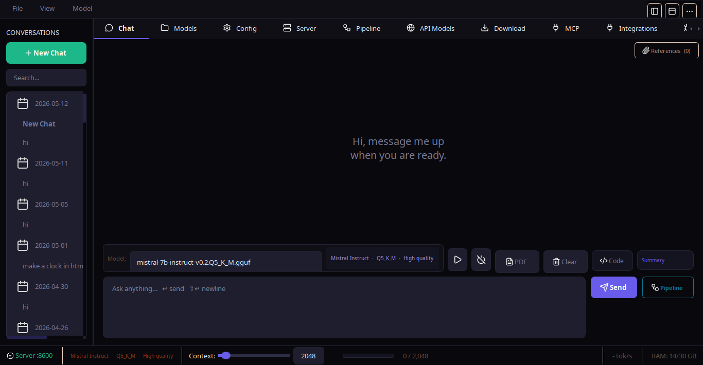
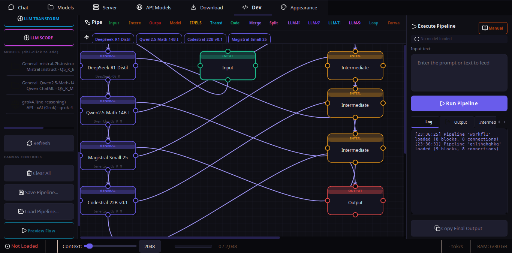

Desktop GUI
Chat, models, downloads, API profiles, references, pipeline builder, Labs, MCP, integrations, settings, and live context status.
PyQt6themeable

Open source local AI workspace - v0.3.7
NativeLab combines a desktop GUI, terminal CLI, visual pipeline builder, AI-assisted pipeline generation, Labs, document workflows, Ollama, HF Transformers, llama.cpp, and API backends in one local-first app.
What it is
NativeLab is not just a chat box. It is a model runner, document workspace, visual workflow editor, CLI, integration endpoint, and experimental app surface built around local ownership.
Chat, models, downloads, API profiles, references, pipeline builder, Labs, MCP, integrations, settings, and live context status.
A scriptable control center for chat, setup, models, Labs, saved pipelines, integrations, endpoint serving, and file references.
Build multi-step model workflows with logic blocks, loops, references, live intermediate output, and an AI Builder tab.
Pipeline builder
The pipeline editor has resizable sidebars, shipped example presets, blank-canvas panning, auto-growing canvases, centralized validation, and optional native graph helpers. The AI Builder turns a request into validated pipeline JSON.

Input, model, reference, transform, merge, split, LLM logic, custom code, and output blocks.
Backends
Local GGUF, llama.cpp server/CLI, running Ollama models, optional HF Transformers snapshots, OpenAI-compatible APIs, and Anthropic endpoints share the same app state.
Local GGUF models, server mode, CLI fallback, GPU offload settings, and runtime installer.
Register and pull models from an already-running daemon with shared runtime status.
Snapshot downloader, in-app dependency installer, safetensors, dtype, device map, and offline paths.
OpenAI-compatible and Anthropic profiles work in chat, Labs, pipelines, and integrations.
Android
The official Android client. Runs llama.cpp on-device via JNI, with chat, document RAG, vision models, and a LAN API server. Same local-first philosophy, free forever under AGPL v3.
Bundled llama-server via JNI fork+execve. No cloud, no account needed.
Attach PDF, text, DOCX. Automatic chunking and keyword retrieval.
Attach images. Auto-detects vision models and pairs mmproj files.
OpenAI + Anthropic compatible. Use your phone as a local AI server.
Install
The default install includes the GUI. New users can let auto setup pick a practical llama.cpp or HF Transformers path based on hardware.
$ pip install nativelab $ nativelab # desktop GUI $ nativelab --cli # terminal control center